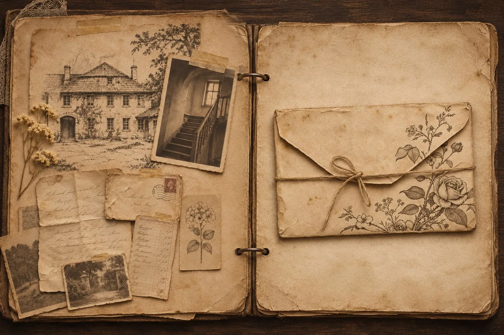
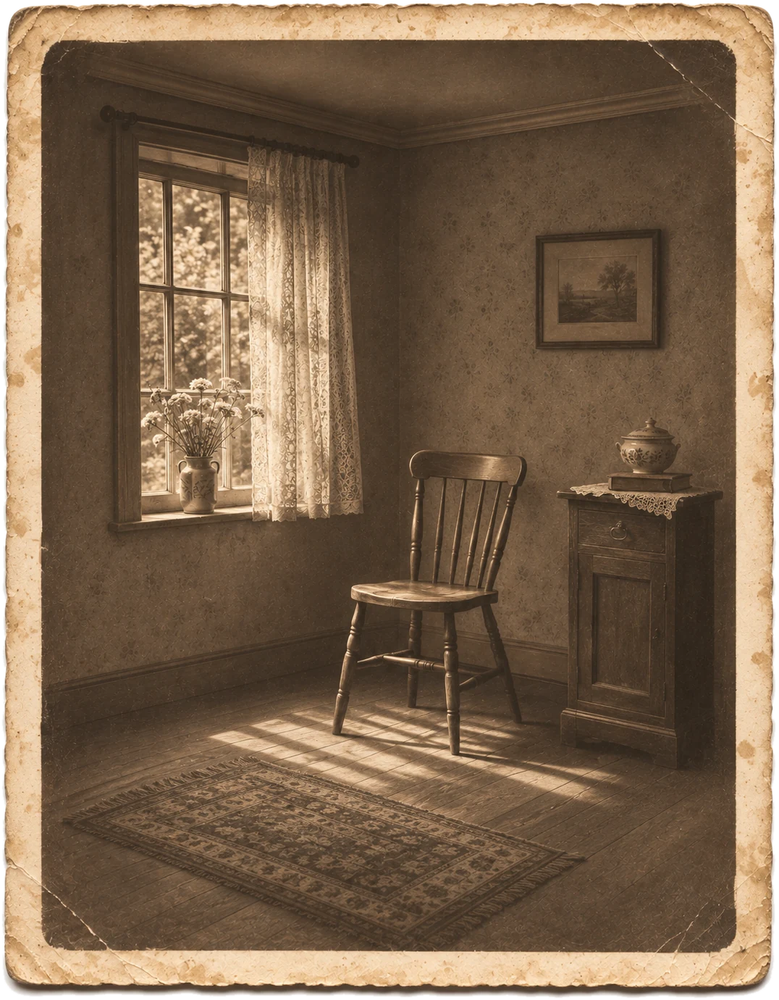
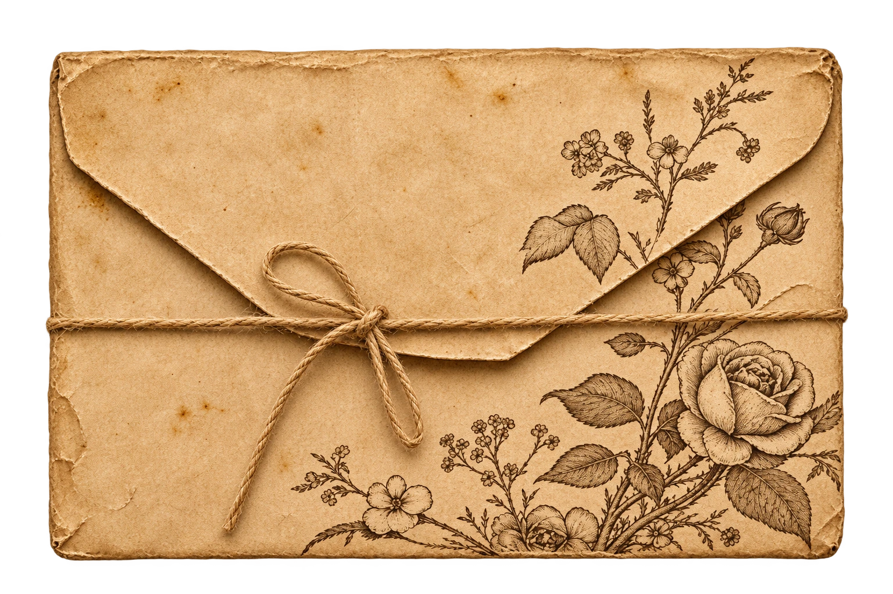
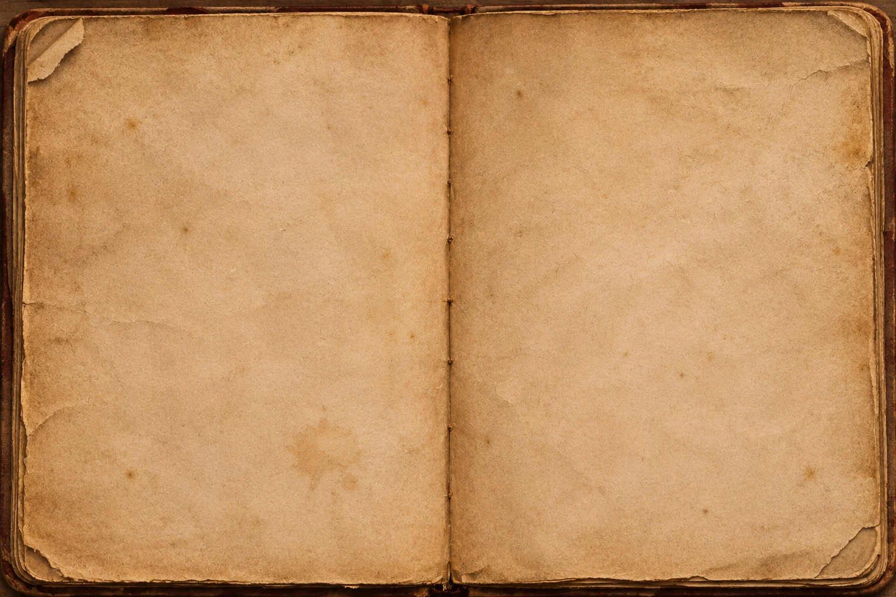
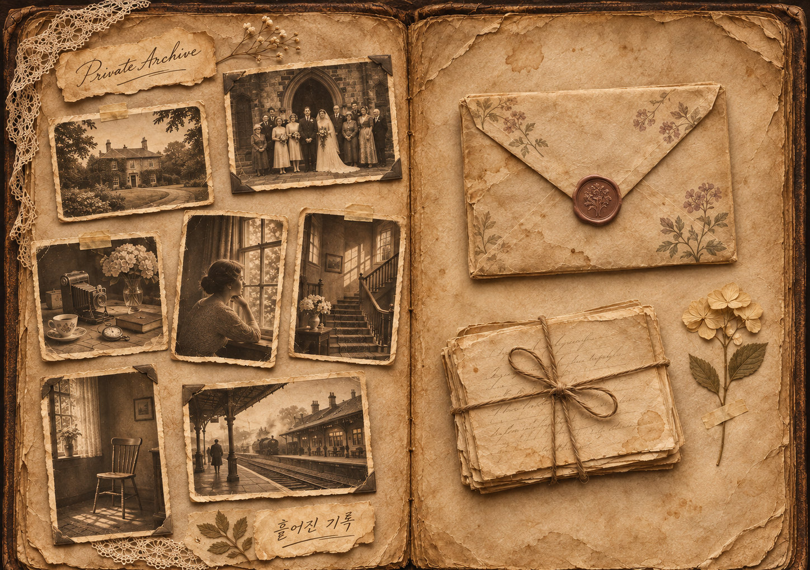

흩어진 기록을 펼치다





결혼식
평화로운 결혼식의 한순간…

0개 관찰·0 / 8
PHOTOGRAPH RESTORATIONORDER
사진을 정리한다
기억의 순서
편지와 사진을 대조해 사진을 나열하세요. 같은 시기의 사진끼리는 순서가 달라도 됩니다.
UNIDENTIFIEDENVELOPE 01
미확인 사진 보관
설명되지 않는 한 장
다른 사진과 쉽게 연결되지 않는 사진을 별도의 봉투에 넣어보세요.
보관할 사진을 선택하세요.
01 / 04